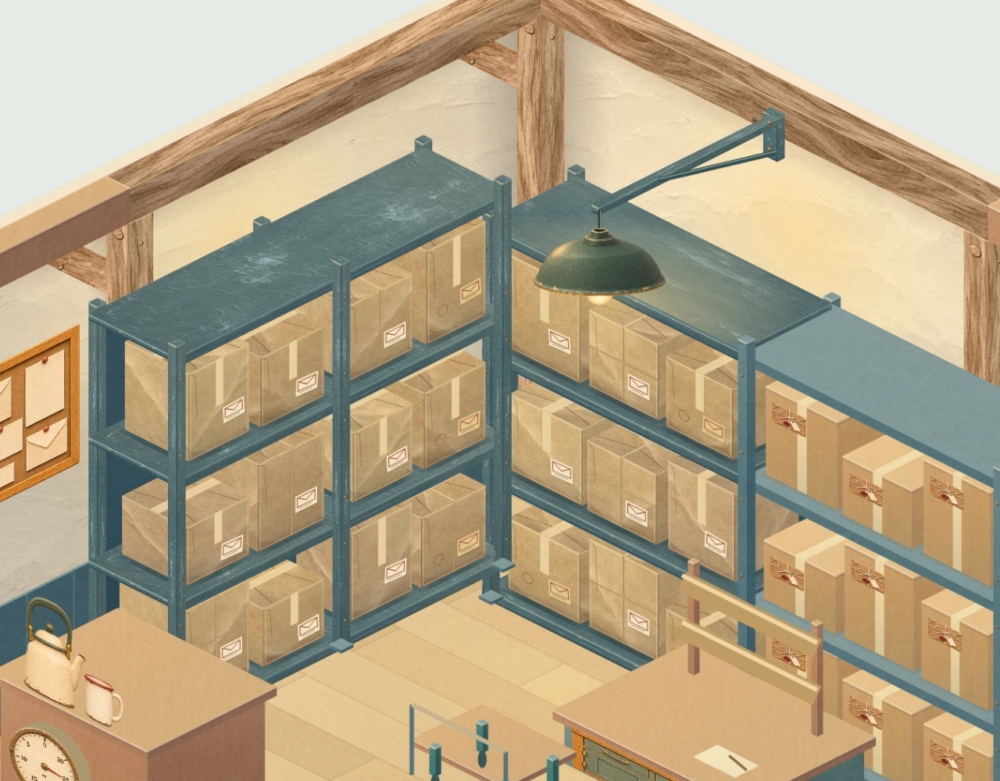
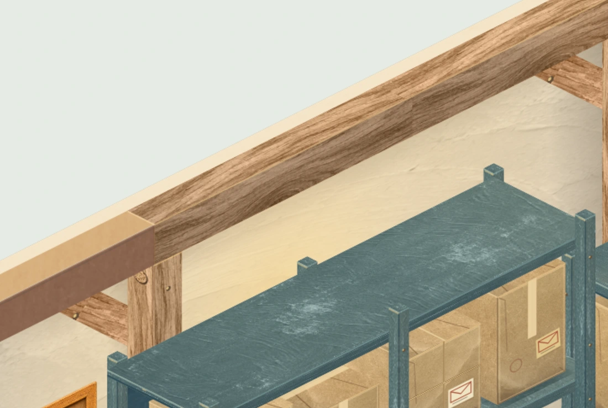
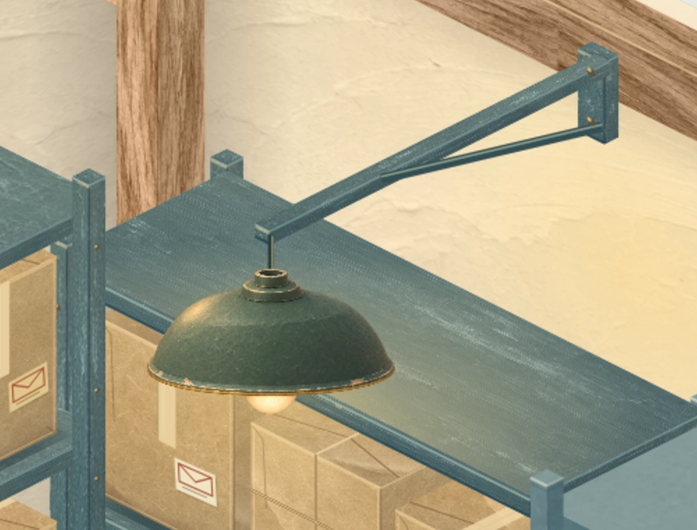
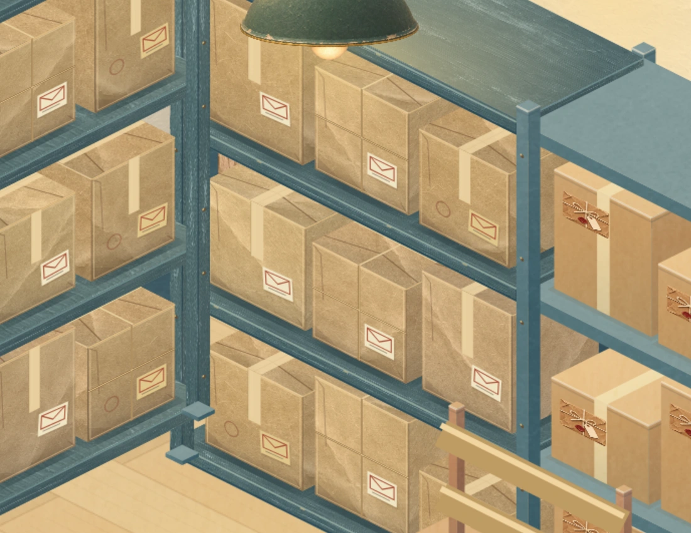
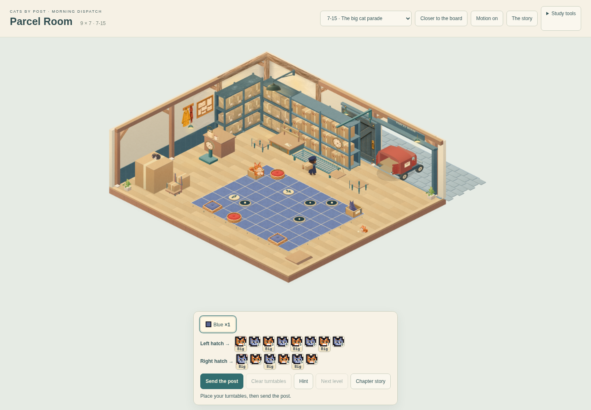
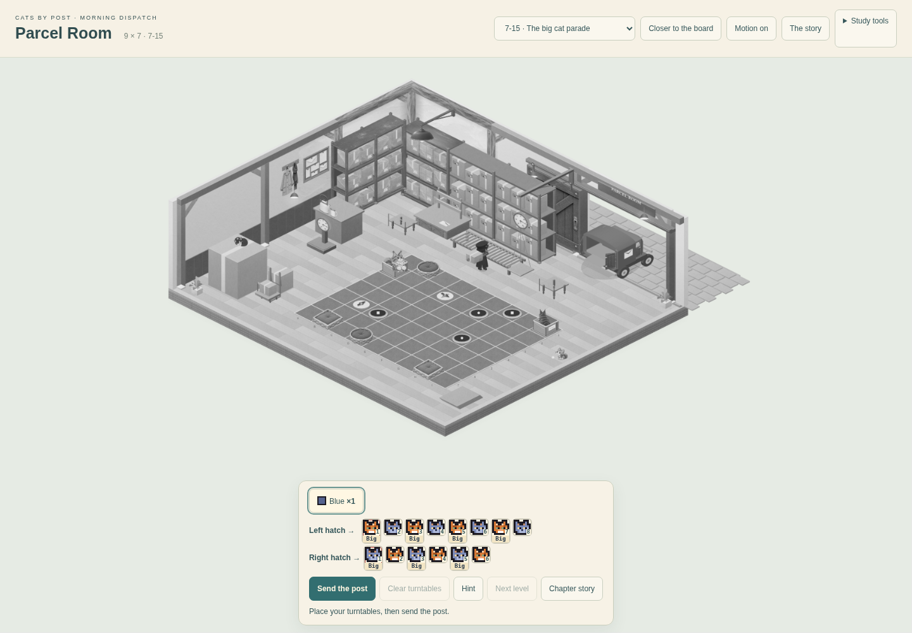

CATS BY POST · MORNING DISPATCH · MATERIAL STUDYOne rear corner, finished for review
Step 2: timber, paper, painted steel, plaster and pendant light. This treatment covers the rear corner and its first shelving bay. The remaining room is still at the construction stage.
Same corner, same camera

Material sample · actual playable renderer. Open the image to inspect it at full size.
Materials and light in detail

Timber and plasterLong grain follows each member. Exposed joint pegs show end grain; shadows sit under the cap and beside the posts.

Pendant and local lightA mounted bracket, enamel hood, rolled rim and warm bulb. Light reaches the top shelf and nearby wall.

Paper against painted steelFolded lids, varied stock, tape and twine; darker recesses and contact beneath each load.
At normal play size · 9 × 7

The finished sample occupies one corner. The board, controls and working room remain playable.
Readability in grayscale

Board geometry and paired turntable symbols remain readable without colour.
These are Chromium captures of the study, not generated concept renders. Gameplay, delivery records, chapter timing and save isolation are preserved. This is a material review checkpoint; the complete room is not yet at the selected reference's fidelity.